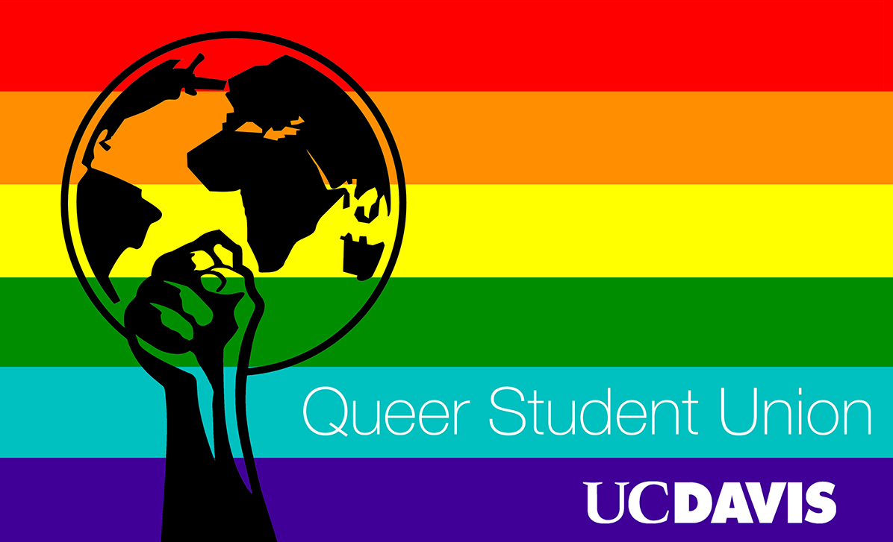

QSU at UCD: Logo Design
Software Used: Adobe Illustrator, Adobe Photoshop
Queer Student Union is a registered student organization that has been in operation for 10+ years at UC Davis. Fostering a thriving LGBTQIA+ community in the local area and beyond is fundamental to the organization's guiding precepts. Promoting awareness of and practical access to a multiplicitous network of relevant groups on campus is central to this mission. As the organization’s lead producer of graphics, earlier this year I was tasked with translating its conceptual ethos into visual form. Gilbert Baker’s iconic Rainbow Flag has long been a resonant symbol among queer identified folks, providing a recognizable backdrop that instantly signifies the organization’s progressive disposition. Popularized in 1979, the six-color iteration of Baker’s Rainbow Flag was chosen for QSU's logo design to reduce clutter and prevent a cramped spatial layout. In response to recent political developments, the prominent clenched black fist seeks to validate the marginalized experiences of queer people of color under institutionalized systems of oppression around the world. Further, the integration of this iconography is a direct allusion to how queer existence in today’s age is a revolutionary act of resistance, one that should always be enacted unapologetically and without restraint.